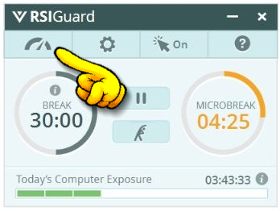
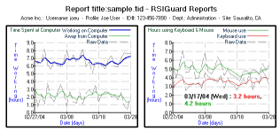
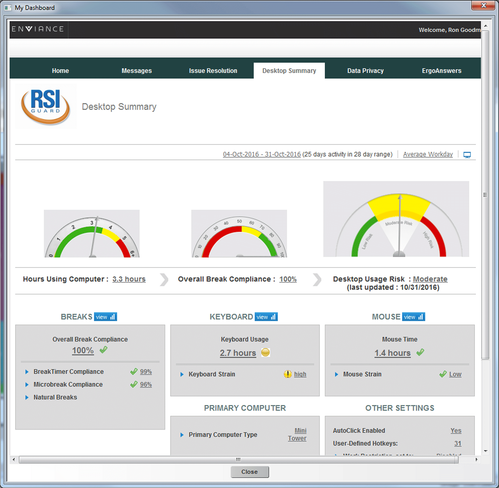

DataLogger is a feature of RSIGuard that tracks important ergonomic metrics of how you work. It can help you and your organization troubleshoot any discomfort issues you have at your workstation.

To view your data, click on the Data menu of RSIGuard. Depending on your configuration, you can select Usage Statistics or view the My Dashboard page.


View Detailed Information about DataLogger